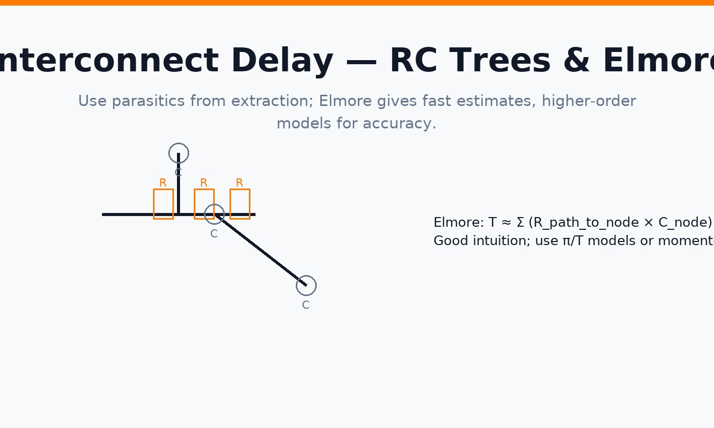
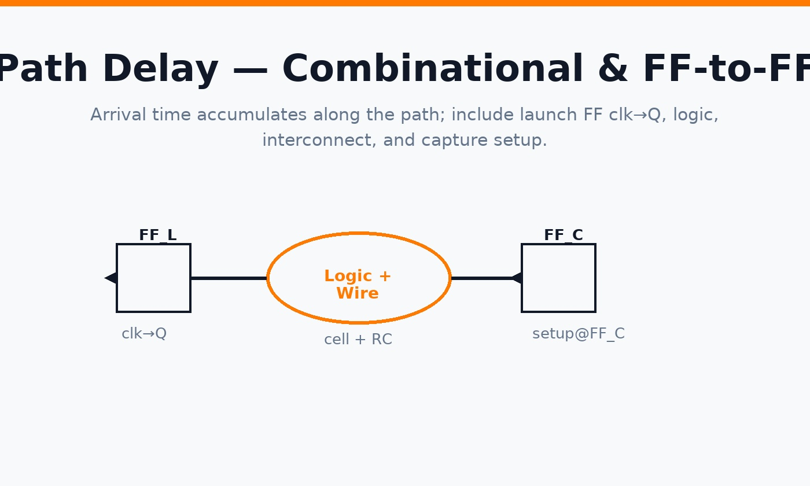
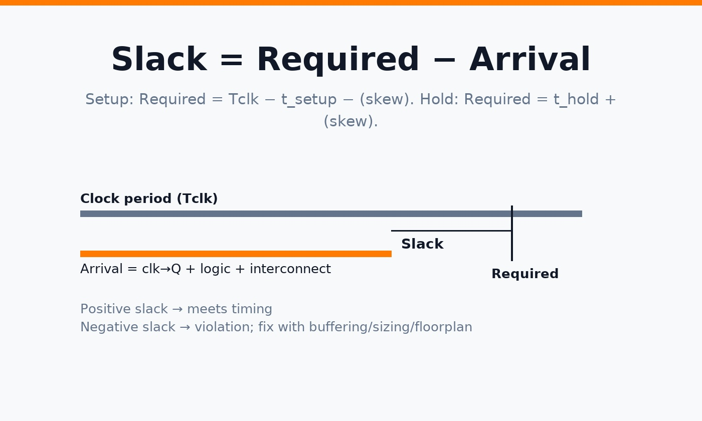

Introduction
Static Timing Analysis (STA) estimates timing without simulation by composing the delay of cells (from Liberty tables) and interconnect (from extracted RC). You’ll see how tools compute: (1) cell delay under input slew and output load, (2) interconnect delay using RC trees, and (3) full-path arrival vs required times to get slack.
1) Delay basics
The propagation delay of a net is the sum of cell delay (load & input-slew dependent) and interconnect delay (from RC parasitics). STA propagates both delay and slew through the timing graph.
2) Cell delay & effective capacitance
Liberty (.lib) characterizes delay and output slew as a function of input transition and output capacitive load. Because nets are RC networks, tools compute an effective capacitance (Ceff) that approximates the time-varying current drawn by the interconnect. This Ceff is iteratively solved so the cell’s output slew and the wire’s waveform are consistent.
3) Interconnect delay (Elmore & higher-order)
For quick intuition, Elmore delay sums (resistance along the path to a node) × (capacitance at that node). Sign-off tools use more accurate π/T models or moment-matching on extracted RC trees.

4) Pre-layout vs Post-layout timing
- Pre-layout: wire-load, early floorplan, or global-route estimates (fast but coarse).
- Post-layout: parasitics from extraction (SPEF/SDF) — accurate enough for sign-off.
5) Slew merging & thresholds
When multiple inputs converge, tools merge slews carefully to avoid over-pessimism. Different libraries may define thresholds differently (e.g., 10–90% vs 20–80%). STA normalizes these conventions when reading Liberty data.
6) Different voltage domains
Lower VDD increases delay and softens slews. Multi-VDD designs require correct .lib selection per domain and level-shifter timing arcs. Mode/corner definitions ensure each domain is analyzed at the proper PVT.
7) Path delay (combinational & FF→FF)
Path delay includes launch FF clk→Q, all cell + RC segments, and capture FF setup. Arrival time accumulates along the topological order of the timing graph.

8) Slack calculation (setup & hold)
Setup slack = Required − Arrival. Required time equals the next active clock edge minus setup and skew. Hold slack = Required − Arrival with required near time zero (same edge + hold + skew).

9) OpenSTA commands (quick start)
read_liberty sky130_fd_sc_hd__tt_025C_1v80.lib
read_verilog top_netlist.v
link_design top
# Clocks & IO
create_clock -name core_clk -period 10 [get_ports clk]
set_input_delay 1.0 -clock core_clk [all_inputs]
set_output_delay 1.0 -clock core_clk [all_outputs]
# Constraints
set_propagated_clock [all_clocks]
set_driving_cell -lib_cell sky130_fd_sc_hd__inv_2 [all_inputs]
set_load 0.02 [all_outputs]
# (Optional) Parasitics for post-layout
# read_spef top.spef
report_checks -path_delay min_max -fields {slew capacitance} -digits 3 -nworst 10
report_tns
report_wns
Tip: For MCMM, define multiple corners (.lib sets) and modes (SDC variants) and report worst across scenarios.
FAQ
Is Elmore accurate enough for sign-off? No — it’s great for intuition and fast estimates, but sign-off uses extracted RC with higher-order models.
Why does my post-layout timing get worse? Real RC (coupling, long routes) makes slews slower and delays longer than pre-layout estimates.
Conclusion
STA weaves together cell tables and interconnect RC to predict arrival times and slack. Mastering Ceff, RC modeling, and path composition makes timing closure far more systematic.